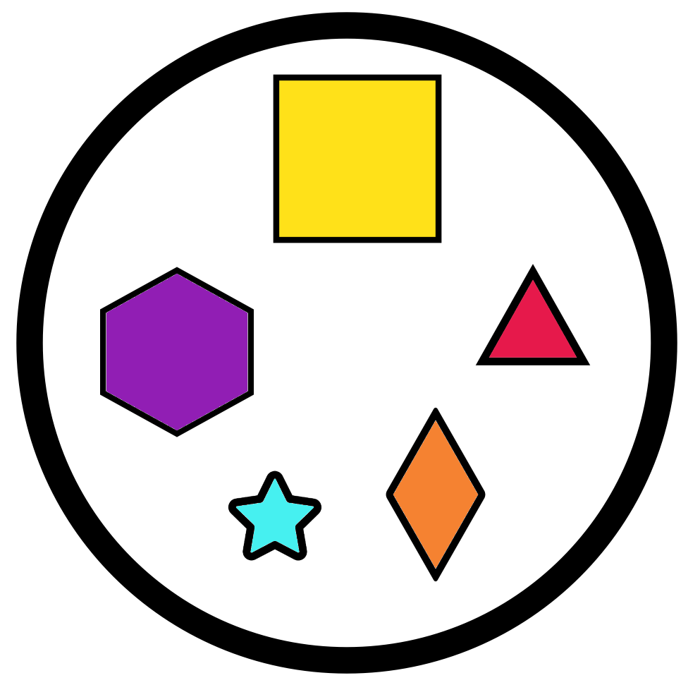
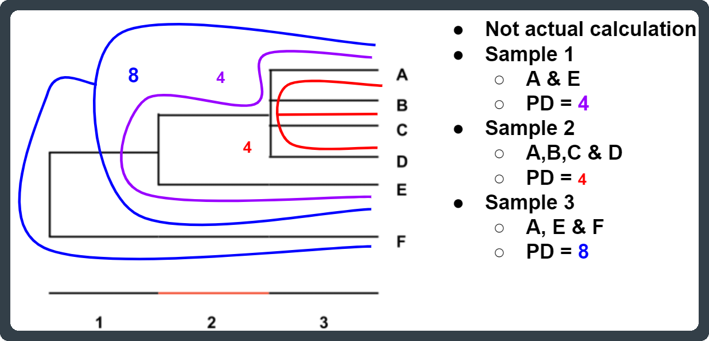

Chapter 17 Appendix
17.1 Alpha diversity metrics

Alpha diversity measures assess the diversity of each sample separately. Generally a higher value of these indexes/measures indicates higher diversity/evenness.
17.1.1 Observed features
The observed number of features is defined as the number of distinct features, such as ASVs, within a sample.
The number of observed features can also be known as the feature richness of a sample. A sample with more present features than another would be said to be richer.
17.1.2 Evenness
How evenly spread the abundances are across all present features.
- A sample with 4 ASVs, each with 25% relative abundance would be perfectly even.
- A sample with 4 ASVs, where one ASV has 97% abundance and the other 3 have 1%, would be highly uneven.
17.1.3 Faith’s PD (phylogenetic diversity)
Faith’s PD represents the minimum total branch length that covers all taxa within the sample on a phylogenetic tree (Faith, 1992). A smaller PD value indicates a reduced expected taxonomic diversity whilst a large PD value indicates a higher expected diversity.
A sample with 10 ASVs could have a lower Faith’s PD than a sample with only 2 ASVs. This could occur if the 10 ASV sample only has ASVs from one genus whilst the 2 ASV samples consists of ASVs from 2 different Families.

17.1.4 Simpson
A measure of diversity based on number of features present and the relative abundance of each feature. If richness and evenness increase the diversity score increases.
Equation: \[ D = 1 - {( \frac {\sum n{(n-1)}} {N{(N-1)}} )} \]
- D = Simpson diversity index
- n = Abundance of feature
- N = Total feature abundance of sample
The values range from 0 (no diversity) to 1 (infinite diversity).
17.1.5 Simpson evenness measure (simpson_e)
This is a measure of evenness based on the Simpson index. It ranges from 0 (lowest eveness) to 1 (complete evenness). It compares the calculated Simpson Index of a sample to its theoretical maximum if the sample was perfectly even but had the same amount of features.
Equation: \[ E_D = \frac{D} {D_m} \]
- ED = Simpson evenness measure
- D = Simpson diversity index
- Dm = Max possible Simpson diveristy index given the number of features
17.1.6 Shannon
A measure of diversity where a higher number means higher diversity. Shannon’s index accounts for both abundance and evenness of the feaures present.
Equation:
\[ H = -\sum_{i=1}^{n} p_i lnp_i \]
- H = Shannon diversity index
- p = n/N
- n = Abundance of feature
- N = Total feature abundance of sample
17.2 Beta diversity metrics

Beta diversity compares 2 samples at a time. This is measured in terms of dissimilarity:
- A lower score indicate the 2 samples are more similar.
- A higher score indicates the 2 samples are more dissimilar.
17.2.1 Weighted and unweighted UniFrac distances
The UniFrac metric is a phylogenetic distance measure between two samples. It is defined as “the sum of the unshared branch lengths between two samples divided by the total branch length (shared + unshared) of two samples” (Lozupone and Knight, 2005). This results in calculating the fraction of the branch lengths unique to each sample (ie. the higher this value is, the more dissimilar two samples are). The entire phylogenetic tree created for all the sequences of all the analysed samples is used for this calculation.
- Unweighted UniFrac: Only considers feature presence/absence.
- Weighted UniFrac: Takes into account feature presence/absence & abundance. I.e. the value is weighted by the abundances.
17.2.2 Bray-Curtis
The Bray-Curtis metric is a dissimilarity measure that can quantify the level of difference between two samples. Two identical samples would have a Bray-Curtis measure of 0 (i.e. they have 0 dissimilarity).
There are 2 versions but the one used by QIIME2 looks at the number of features shared by the 2 samples.
Equation:
\[ CBC = 1 – (\frac{2c} {a + b}) \]
- c = # features present in both samples
- a = # features present in sample a
- b = # features present in sample b
17.3 Diversity Resources
For more diveristy measure please see: https://forum.qiime2.org/t/alpha-and-beta-diversity-explanations-and-commands/2282